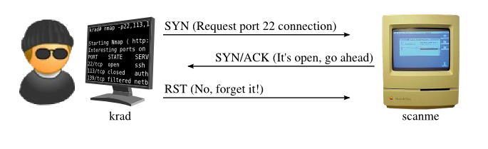
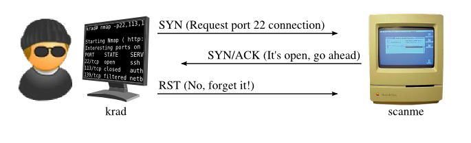
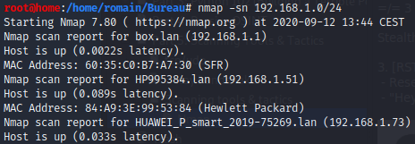
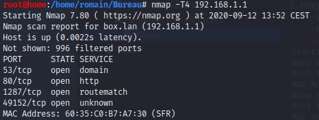

https://nmap.org/
Nmap port scan = stealth scan
=/= 3 way handshake
Stealth scan = [SYN], [SYN, ACK], [RST]
3. [RST]
- Reset
- "Hey just kidding, I don't want to connect."
 

Nmap (cyber mentor syntax)
1. Ping sweep- - what ips might be up ?
- - nmap -sn 192.168.1.0/24

2. First scan
- nmap -T4 192.168.1.1- - T4 : speed (1 to 5, the quicker the most likely to miss something)
- - can define ports, else search through 1000 most common ports
- - best practice : scan everything in tcp range
- - can get infos :
- - 53/tcp open domain : running DNS
- - 80/tcp open http : running webserver
- ...
3. Scan more in depth- - nmap -T4 -A -p- 192.168.1.1
- - -A = All : -A: Enable OS detection, version detection, script scanning, and traceroute
- - -p = ports, -p- = all ports
- -> -A -p- : scan everything for all ports
- - can take over an hour
VERY LONG ! HOW TO IMPROVE ?
Step 1 : Reduce to ports in first scan result :- - nmap -T4 -A -p53,80,1287,49152 192.168.1.1
Step 2 : scripting to match needs !